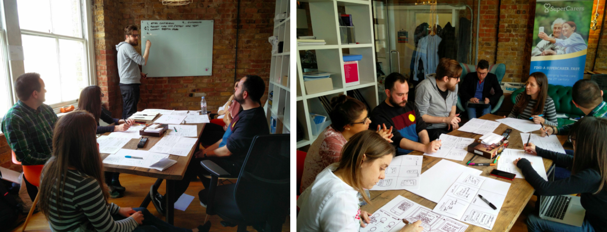
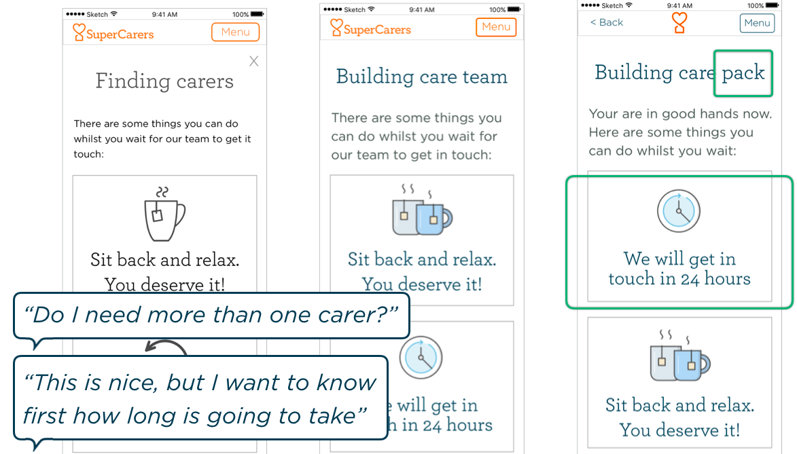
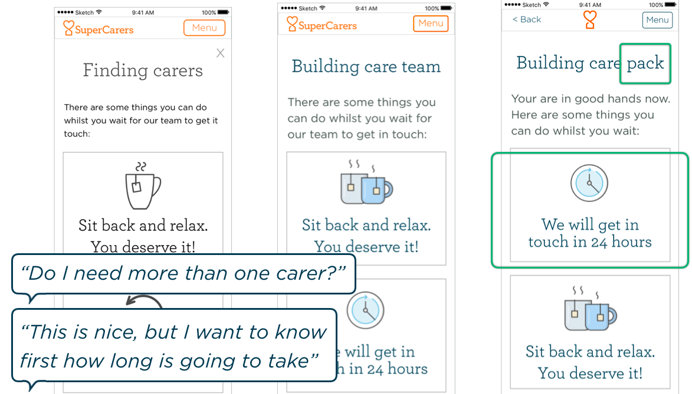

SuperCarers

Synopsis
Group project to improve the user experience and engagement for SuperCarers, a London based company that wants to make home care easier, cheaper and sustainable for everyone. The challenge was to keep the user engaged and give them the best possible experience in a very hard moment of their lives.
The new web app provides the users with support, training and useful information whilst they wait for the company to find the best care choice for them.
Skills
- Team work
- Stakeholder interview
- User interview
- User research
- Creation of personas
- Prototyping
- Usability testing
The brief
SuperCarers is a family business that connects care givers and care seekers in London. It was founded by two brothers, Adam and Daniel Pike, after watching their mother struggle to cope with managing their grandma’s care.

SuperCarers gave us a brief where they pointed out that there is a weak point between the on-boarding process and the actual use of the service. They suggested that the reason might be the waiting time whilst the experts look for the best carers for the customer.
User research
Users need more hand holding through the process, and want more information in general, especially about the carers. They want to know how they are selected and the experience they have.
“Only the candidate matters, not the agency”
“Choosing the right carer is a very scary decision”
“Just because you've done a course, doesn't mean you understand dementia”
“I would have liked to have more information about pricing”
The user persona

According to the data provided by the company and the users, the vast majority of the actual users are middle aged woman, not tech-savvy, working full time and looking for a carer for an elderly relative who suffers from dementia.

Martha's journey whilst using the existing web app shows the weakest point .
Problem statement
The opportunity
Users experience a gap of time between on-boarding and receiving their care team, that leaves them confused.
The solution
A web app that makes use of the downtime and keeps the user engaged.
The outcome
The care seeker feels informed, engaged and supported through the whole process.
Prototype
We ran a design studio with the stakeholders, developers and care advisors of the company before building the first prototypes.

The prototype was based on the idea of a timeline to show the step of the process where the user is at one specific moment, as well as giving a general view and understanding of the whole process.
All the new content would be included in the existing web app, so users would feel comfortable with it before using it to manage their needs. We conducted user testing after every one of the eight iterations.
 

Users were happy with the navigation, the voice and the content displayed in the app.
The clients enjoyed the presentation and implemented some of the changes proposed by our team.
Clickable prototype
The clickable prototype was built to illustrate a click-through presentation showing the proposed user journey of Martha while waiting for the creation of her care pack.
Find it in the following link: